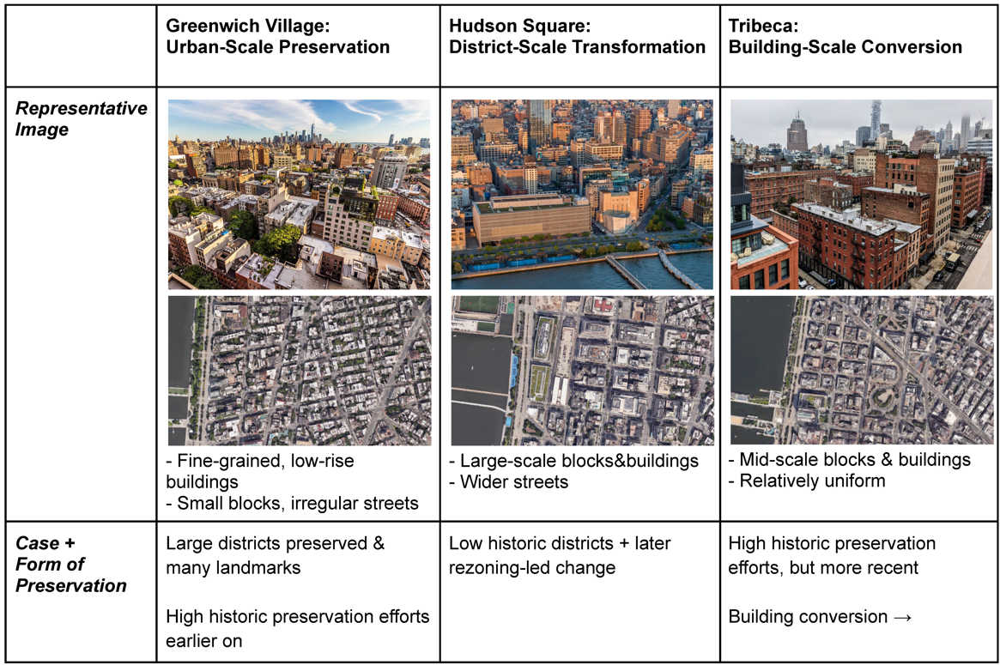

01

Reading Change through Preservation
Comparing Greenwich Village, Hudson Square, and Tribeca revealed how preservation and redevelopment can retain physical form while transforming local communities and economies. This raised a central question: how does urban change create value, and who is displaced in the process?